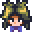

Isola Zenzero
| Isola Zenzero | |
 | |
 | |
| Occupanti: |  Birdie |
L'Isola Zenzero è un'isola dell'arcipelago delle Isole Felce . Vi si può accedere dopo aver riparato la barca nel retro del Negozio di pesca. Acquistare un biglietto per la barca costa  1 000o ed include il ritorno.
1 000o ed include il ritorno.
L'Isola zenzero è l'unica isola disponibile da visitare nell'arcipelago. La prima volta che il giocatore sale sulla barca, si attiva un filmato in cui è possibile vedere altre isole dalla barca durante il tragitto. Successivamente, viene mostrata solo l'animazione di Willy che sale sulla barca e inizia a guidarla.
Il giocatore può tornare a Stardew Valley in qualsiasi momento gratuitamente entrando nella barca sulla spiaggia meridionale. Di solito torneranno all'interno del Negozio di pesca, tranne nei festival quando il percorso di ritorno alla fattoria è bloccato, in tal caso il giocatore verrà portato invece alla Fermata dell'autobus. Se il festival si tiene in spiaggia, il giocatore verrà portato sul ponte che conduce alla spiaggia a sud di Pelican Town.
Simile alla Serra, l'attuale stagione non influisce su quali colture possono essere piantate e coltivate sull'Isola Zenzero. Inoltre, la stagione in corso non influisce sui pesci che possono essere catturati sull'isola.
Sud dell'isola
Questa è l'area in cui il giocatore arriva per la prima volta. Ci sono il molo, una piccola spiaggia e uno spazio per teletrasportarsi tramite un Teletra-Totem: Isola o Obelisco dell'Isola. Un edificio in rovina è il sito per un futuro villaggio vacanze.
Inizialmente, due grandi tartarughe bloccano i percorsi verso le direzioni nord ed ovest dell'isola. Il giocatore deve seguire Leo che appare e corre nella giungla ad est dell'isola. Le interazioni nella capanna di Leo rimuovono la tartaruga che blocca l'uscita nord. Al ritorno sulla spiaggia appare uno Spiritello magmatico che conduce il giocatore a nord verso il Vulcano. La tartaruga che blocca l'uscita occidentale può essere rimossa pagando 10 noci dorate al pappagallo vicino.
Villaggio vacanze
Dopo che la fattoria dell'isola a ovest è stata riparata, il villaggio vacanze può essere costruito per 20 noci dorate. Da quel momento in poi un sottoinsieme casuale di abitanti da Pelican Town arriverà alle 11am e partirà alle 6pm ogni giorno senza pioggia che non sia un giorno festivo. Il giocatore può aprire/chiudere il villaggio vacanze per il giorno successivo con l'interruttore posizionato tra le due porte dello spogliatoio.
Dopo aver aperto il villaggio vacanze, Gus gestirà un bar nei giorni in cui lo visiterà.
| Immagine | Nome | Descrizione | Prezzo |
|---|---|---|---|
| Piña Colada | Bevi con moderazione. | ||
| Birra | Bevi con moderazione. | ||
| Malto chiaro | Bevi con moderazione. | ||
| Idromele | Una bevanda fermentata dal miele. Bevi con moderazione. | ||
| Canditura di mirtilli rossi | La canditura è abbastanza dolce da mascherare il frutto amaro. | ||
| Vino di mango | Bevi con moderazione. | ||
| Curry tropicale (Ricetta) | Una ricetta per fare Curry tropicale |
Isola sudorientale
Quest'area viene sbloccata costruendo il Villaggio vacanze, che ripulisce i detriti a est del molo. Contiene una pozza di marea a forma di stella, una grande roccia al largo e una baia nascosta dei pirati.
Covo dei pirati

C'è un ingresso nascosto sul lato est dell'isola sud-est che conduce al covo dei Pirati. È possibile accedervi in qualsiasi momento una volta che l'isola sud-est è disponibile e nei giorni non piovosi e pari della stagione ci sono pirati in visita dopo le 20:00. Meduse simili a quelle che appaiono al festival Danza delle meduse lunari possono essere viste nella piscina più a sud. Non possono essere catturate.
Quando i pirati sono in visita, il giocatore può giocare a freccette per vincere noci dorate. (Non ci sono ricompense dopo le prime tre volte in cui il giocatore vince una partita.) C'è anche un bar in cui a qualsiasi giocatore che indossa un Cappello da pirata, Benda sull'occhio o Cappello da pirata deluxe viene dato dell'Idromele una volta al giorno.
Il giocatore può entrare nella grotta in qualsiasi momento per pescare nella piscina a sud-est o nelle piccole piscine vicino all'ingresso. Questo è l'unico posto nel gioco in cui è possibile catturare razze. Oltre al pesce mostrato nella Sezione Pesca di seguito, il giocatore può trovare una  Statua del Ghiottone, che inizialmente appare come una scatola regalo quando viene trovata.
Statua del Ghiottone, che inizialmente appare come una scatola regalo quando viene trovata.
Se il giocatore si trova all'interno della grotta prima delle 20:00 di un giorno in cui i pirati stanno visitando, alle 20:00 il giocatore viene automaticamente rimosso dalla grotta e posizionato fuori dal suo ingresso.
Sirena

Nei giorni di pioggia una sirena apparirà sul grande scoglio vicino alla riva. Se il giocatore piazza i Blocco-flauto e li sintonizza per suonare Il canto della sirena, lo ricompenserà con 5 noci dorate.
Per suonare la canzone della sirena, posiziona i Blocco-flauto sopra o sotto ogni serie di pietre sulla riva, quindi sintonizza ogni blocco in base alla quantità di pietre. Una pietra grande simboleggia 5 e una pietra piccola simboleggia 1. Dopo aver sintonizzato tutti e 5 i blocchi, corri semplicemente vicino ad ognuno da sinistra a destra.
| Accordo dei blocchi | ||||
|---|---|---|---|---|
| Blocco 1 | Blocco 2 | Blocco 3 | Blocco 4 | Blocco 5 |
 |
 |
 |
 |
 |
| 1 Click | 10 Click | 8 Click | 4 Click | 6 Click |
| oppure | ||||
| 2 Click | 11 Click | 9 Click | 5 Click | 7 Click |
Isola Est
Questa zona è raggiungibile camminando verso est dal molo dell'Isola Sud. Ci sono una giungla e una capanna dove un bambino di nome Leo vive con un pappagallo parlante. Questo pappagallo darà al giocatore suggerimenti su quante noci dorate sono rimaste da trovare nelle varie aree. Fuori dalla capanna, a sinistra, c'è un Santuario delle Banane.
- Qui appaiono dei germogli di felce che possono essere raccolti.
Uccelli delle gemme
Un sentiero nascosto a est nella giungla conduce a un'area con un santuario e diversi piedistalli. L'ingresso è a destra dell'entrata della capanna di Leo. Ogni piedistallo ha davanti un'immagine scolpita nella pietra che corrisponde a una sezione dell'isola. L'interazione con il santuario mostra il seguente messaggio:
- "Quando le nubi piangono, furiose
- Cerca gli uccelli con le pietre preziose
- A nord, a sud, est, ovest, uno al giorno
- E con i loro doni fai ritorno"
Ogni giorno piovoso sull'isola, un uccello con una gemma apparirà in una direzione cardinale dell'isola:
- Sud: appena a nord-ovest del porto
- Est: al centro dell'area, vicino al sentiero
- Nord: nord-est dal Mercante dell'isola
- Ovest: appena ad est dello stagno
Avvicinarsi all'uccello lo farà volare via, lasciando dietro di sé una gemma che corrisponde al colore dell'uccello: acquamarina, topazio, ametista, smeraldo, o rubino. La gemma dovrebbe essere posizionata sul piedistallo che corrisponde al luogo in cui è stato trovato l'uccello. La disposizione dei quadri e dei piedistalli corrisponde alla tradizionale rosa dei venti, con il nord in alto. Quando tutti e 4 i piedistalli sono stati riempiti, il santuario si attiva e dà al giocatore 5 Noce dorata.
Note:
- Il meteo sull'isola non corrisponde al tempo a Stardew Valley. Il meteo mostra le previsioni giornaliere per l'Isola Zenzero a partire dal giorno dopo che il giocatore ha visitato l'isola per la prima volta.
- Un Totem della pioggia può essere utilizzato sull'isola per costringere gli uccelli ad apparire.
- Gli uccelli appariranno ancora e lasceranno cadere gemme anche dopo che il puzzle è stato risolto. Tuttavia, la ricompensa del puzzle si verifica solo una volta per file di salvataggio.
- Ci sono cinque tipi di uccelli gemma, ognuno dei quali lascia il proprio tipo di gemma. Di questi cinque, quattro vengono selezionati casualmente e assegnati casualmente alla direzione della bussola in cui appariranno. La selezione e l'assegnazione casuali vengono eseguite una volta per file di salvataggio e questo accade ancora prima che il giocatore visiti per la prima volta l'Isola Zenzero in una giornata piovosa.
Isola Nord
Questa zona comprende tutto ciò che si raggiunge camminando a nord dal molo dell'Isola Sud.

Mercante dell'isola
- Articolo principale: Mercante dell'isola
Il Mercante dell'isola è un uccello azzurro che gestisce una bancarella commerciale nell'Isola Nord. Il mercante si sblocca costruendo la fattoria dell'isola. Il mercante viene quindi sbloccato quando il giocatore dà al pappagallo 10 noci dorate.
Il mercante ha merce a rotazione a tema isolano, non acquistabile con alcuna valuta, ma solo tramite baratto in cambio di altri articoli. Gli oggetti barattabili sono ottenuti da raccolta selvatica, molti dei quali si trovano all'Isola Zenzero. Tra gli oggetti commerciali esclusivi ci sono molti tipi di Mobili che hanno temi basati sull'isola. L'oggetto Anima galattica è soggetto ad alcune restrizioni di disponibilità.
Sito degli scavi
A ovest dell'Ufficio da campo dell'isola c'è un ponte rotto che può essere riparato dai pappagalli in cambio di 10 noci dorate. Una volta riparato, conduce al sito di scavo, un'area simile alla Cava. Rocce, filoni ossei, filoni di argilla e albero di mogano hanno la possibilità di apparire lì ogni giorno.
A est delle scale a nord del sito di scavo si trova la Grotta dei Funghi dell'Isola Zenzero. Inizialmente, c'è un masso che blocca l'ingresso e qualcuno dietro di esso chiede aiuto. Posiziona qualsiasi bomba per rimuovere il masso, liberando così il Professor Snail e sbloccando l'Ufficio da campo dell'isola. La caverna genera nuovi funghi casuali ogni giorno. A differenza della caverna della fattoria, i suoi funghi crescono direttamente sul terreno, quindi i giocatori traggono vantaggio dalle avilità di raccoglitore o botanico quando li raccolgono.

Ufficio da campo dell'isola
- Articolo principale: Ufficio da campo dell'isola
La tenda dell' Ufficio da campo dell'isola si trova nella regione centro-settentrionale dell'Isola Nord, sulla strada verso il vulcano. L'ufficio rimane vuoto fino a quando il Professor Snail non viene salvato dalla Grotta dei Funghi al sito degli scavi. Successivamente, il giocatore può donare fossili e rispondere a delle domande sull'isola, in cambio di varie ricompense.
Vulcano Dungeon
- Articolo principale: Vulcano Dungeon
All'estremo nord c'è un dungeon vulcanico con dieci livelli, otto dei quali sono generati casualmente in modo simile alla Caverna del teschio. Il quinto livello ha un negozio, e al decimo e ultimo livello c'è la Forgia, dove gli strumenti e le armi possono essere potenziati usando Scheggia di brace.
Per accedere al dungeon, è necessario un annaffiatoio per fare un percorso attraversabile sulla lava. Questo percorso non persiste nei giorni e deve essere rifatto per attraversare nuovamente. Dopo che il giocatore raggiunge la Forgia e sblocca la porta necessaria per uscire (a ovest della Forgia, a est dell'ingresso), un pappagallo si appollaia vicino al fiume di lava offrendo di sbloccare un ponte permanente in cambio di 5 Noce dorata.
Il fiume di lava nell'ingresso può essere seguito a sinistra per trovare un'uscita nascosta. L'uscita conduce al fiume a nord dello scavo, dove il giocatore può trovare 2 noci dorate.
Isola Ovest
Questa zona comprende tutto ciò che si raggiunge camminando a ovest dal molo dell'Isola Sud. L'ingresso di quest'area è inizialmente bloccato da una tartaruga addormentata, che può essere svegliata dando 10 noci dorate a un pappagallo lì vicino. Questo pappagallo apparirà solo dopo che il primo pappagallo nella casa di Leo avrà ricevuto la sua Noce dorata.
L'area è divisa da nord a sud da un fiume che può essere attraversato su uno qualsiasi dei tre ponti di assi. La fattoria dell'isola, La rana ghiottona, il pappagallo express e il relitto si trovano a est, mentre lo stagno, la capanna di Birdie, lo schiaccia la talpa , La stanza delle noci di Mr. Qi, il boschetto della melma tigre e il rompicapo dei cristalli colorati si trovano a ovest.
Sull'isola ovest ci sono 846 caselle di terreno accessibili durante il normale gameplay:
- 757 sul terreno agricolo principale
- 55 sul grande pezzo di terra a ovest del fiume
- 31 sugli appezzamenti di terreno intorno allo stagno
- 3 su un piccolo pezzo di terra vicino al pappagallo express, a nord della fattoria.
Ci sono anche 33 tessere sopra la Stanza delle noci di Mr. Qi, che sono inaccessibili senza usare delle sedie per lasciare la mappa.
La fattoria
C'è una vasta area dove si possono piantare colture. Inizialmente è ricoperta di tronchi, pietre ed erbacce, proprio come lo è la fattoria di Stardew Valley quando il giocatore arriva per la prima volta. Gli irrigatori possono essere posizionati qui e gli alberi da frutto possono essere piantati. I corvi non appariranno in questa fattoria, quindi gli Spaventapasseri non sono necessari. Proprio come con la Serra, i raccolti di qualsiasi stagione possono essere coltivati nella fattoria dell'Isola Zenzero indipendentemente dalla stagione.
C'è una fattoria fatiscente che i pappagalli ripareranno in cambio di 20 noci dorate. È una casa di 4 stanze con una cucina e un Letto tropicale per ogni giocatore nel file di salvataggio. Viene fornito con un cestino per la spedizione. Una volta che la casa è pronta, i pappagalli costruiranno una cassetta delle lettere per ulteriori 5 noci dorate e un Obelisco della Fattoria per 20 noci dorate.
Rana ghiottona
Dopo che i pappagalli hanno riparato la Fattoria dell'isola, appare una grotta nell'angolo nord-est della fattoria dell'isola. In esso c'è la Rana Ghiottona che ricorda i giorni in cui nella fattoria crescevano colture specifiche e chiede al giocatore di coltivarle. Una volta cresciute, torna da lui per ricevere noci dorate.
| Soluzione |
|---|
| È una missione di coltivazione. La Rana Ghiottona chiede al giocatore di coltivare tre colture: prima Melone, poi Grano, infine dell'Aglio. Per ogni raccolto, coltiva almeno una pianta nella fattoria dell'isola fino a quando non è matura, ma non raccoglierla. Interagisci con la rana e digli che il raccolto è pronto. Ciò innesca un filmato in cui la rana dà al giocatore 5 noci dorate, ma non prende il raccolto. Le colture possono essere coltivate in qualsiasi momento, anche tutte in una volta, ma devono essere presentate alla rana nell'ordine richiesto. |

Capanna di Birdie
Sul lato ovest della spiaggia c'è una capanna dove vive Birdie. Dopo averla incontrata, darà al giocatore la missione "La moglie del pirata". Dopo che la missione è stata completata, non darà più missioni, ma parlerà con il giocatore.

Schiaccia la talpa
C'è un Duggy verde che si muove da una buca all'altra, che può essere "colpito" con gli annaffiatoi per ottenere una Noce dorata. Il giocatore può anche coprire tre dei buchi con oggetti posizionabili e colpire la talpa con un'ascia o un piccone.
Il relitto
Nella parte sud-est della spiaggia, sotto l'area della fattoria, c'è un relitto in cui il giocatore può entrare per raccogliere una Noce dorata. Quando parla con Birdie per la prima volta, lei spiega che suo marito era il capitano della nave.
Boschetto della melma di tigre
A nord dello stagno c'è un piccolo boschetto. Alberi di mogano cresceranno lì e verranno generati diversi melma tigre.

Puzzle dei cristalli colorati
Questo puzzle si trova in una grotta a nord-est del boschetto della melma di tigre.
Entrando nella caverna, clicca sulla statua per iniziare il gioco. Bisognerà ripetere la melodia cliccando sui cristalli nella corretta sequenza. Il gioco diventa più veloce ogni round, con 5 round in totale. Vincere la partita permetterà di ottenere tre noci dorate. Se un round viene fallito, il gioco riprenderà al round 1. Dopo ogni tentativo fallito, il gioco rallenterà leggermente.
La stanza delle noci di Mr. Qi
- Articolo principale: Stanza delle noci di Mr. Qi
Una stanza accessibile ottenendo un totale di 100 noci dorate. All'interno c'è un rilevatore di Perfezione, una tabella degli ordini speciali simile a quella di Pelican Town e un distributore automatico che vende oggetti in cambio di gemme Qi.
La Spiaggia
Sul lato sud-ovest della spiaggia ci sono pozze d'acqua dove possono apparire ricci di mare e coralli. Il sud-est presenta filoni di cozze che possono essere estratte per ottenere cozze (e 5 noci dorate nascoste).
Trasporto
Pappagallo express
Il Pappagallo Express è un sistema di trasporto da sito a sito sull'isola che può portare il giocatore da e verso uno qualsiasi dei cinque siti: Vulcano, Fattoria, Sito degli scavi, Giungla e Molo. Il sito degli scavi non è disponibile via Pappagallo express fino a quando il ponte al sito non è stato riparato, dopodiché la sua inclusione è automatica.
Per sbloccare il pappagallo express, il giocatore deve pagare 10 noci dorate ai pappagalli nella zona della fattoria. Quel sito è a nord della fattoria dell'isola, su per le scale e attraverso i fitti alberi. Finché tutte e quattro le vie di accesso alle aree principali dell'isola non saranno sbloccate, non sarà possibile sbloccare il pappagallo express.
Quando il giocatore seleziona un luogo di viaggio in una stazione del pappagallo express, un'animazione mostra il giocatore che entra in una piccola struttura che due pappagalli poi sollevano. Il giocatore riappare quindi nella posizione selezionata senza ulteriori animazioni.
Pesca
Isola Nord
| Ora del giorno | |||||||||||||||||||||
|---|---|---|---|---|---|---|---|---|---|---|---|---|---|---|---|---|---|---|---|---|---|
| 06 | 07 | 08 | 09 | 10 | 11 | 12 | 13 | 14 | 15 | 16 | 17 | 18 | 19 | 20 | 21 | 22 | 23 | 00 | 01 | ||
Isola sud e sud-est
| Ora del giorno | |||||||||||||||||||||
|---|---|---|---|---|---|---|---|---|---|---|---|---|---|---|---|---|---|---|---|---|---|
| 06 | 07 | 08 | 09 | 10 | 11 | 12 | 13 | 14 | 15 | 16 | 17 | 18 | 19 | 20 | 21 | 22 | 23 | 00 | 01 | ||
| Solo giorni di sole | |||||||||||||||||||||
| Pesce scorpione | |||||||||||||||||||||
Covo dei pirati
| Ora del giorno | |||||||||||||||||||||
|---|---|---|---|---|---|---|---|---|---|---|---|---|---|---|---|---|---|---|---|---|---|
| 06 | 07 | 08 | 09 | 10 | 11 | 12 | 13 | 14 | 15 | 16 | 17 | 18 | 19 | 20 | 21 | 22 | 23 | 00 | 01 | ||
| Solo giorni di sole | |||||||||||||||||||||
Isola ovest
Si noti che ci sono due tipi di acqua nella parte occidentale dell'Isola Zenzero: acqua dolce e oceanica. Il ponte di assi più a sud del fiume è il divisorio tra i due. L'oceano è a ovest ea sud; lo stagno e il fiume a nord del ponte di assi più a sud sono d'acqua dolce.
| Ora del giorno | |||||||||||||||||||||
|---|---|---|---|---|---|---|---|---|---|---|---|---|---|---|---|---|---|---|---|---|---|
| 06 | 07 | 08 | 09 | 10 | 11 | 12 | 13 | 14 | 15 | 16 | 17 | 18 | 19 | 20 | 21 | 22 | 23 | 00 | 01 | ||
| Oceano | Solo giorni di sole | ||||||||||||||||||||
| Pesce scorpione | Oceano | ||||||||||||||||||||
| Oceano | |||||||||||||||||||||
| Oceano | |||||||||||||||||||||
| Oceano | |||||||||||||||||||||
| Oceano | |||||||||||||||||||||
| Acqua dolce | |||||||||||||||||||||
| Acqua dolce | |||||||||||||||||||||
| Acqua dolce | |||||||||||||||||||||
La Forgia
- Articolo principale: Forgia
Anguilla lavica e Spazzatura possono essere catturati in qualsiasi momento della giornata. È anche possibile catturare un dipinto di 'Fisica 101'.
Gallery

Isola Nord

Isola Est

Isola Sud

Isola ovest

Caselle irrigate nell'isola ovest (tubero di taro e riso)

Isola sud-est

Cava dell'isola sud-est
Forgia nel vulcano
Curiosità
- I cristalli colorati nel rompicapo della caverna ricordano la pietra canterina, un mobile ottenuto donando 21 minerali al museo.
- C'è un paio di pirati che combattono al covo dei pirati che sono un riferimento a Mario Bros.
- Meduse simili a quelle viste alla Danza delle meduse lunari appaiono spesso nell'acqua di notte.
Storia
- 1.5: Introdotta.
| Luoghi | |
|---|---|
| Luoghi | Boschi segreti • Boschi sul retro • Carrello delle miniere • Cava • Caverna del teschio • Cimitero • Covo di insetti mutanti • Deserto • Fattoria • Fermata dell'autobus • Ferrovia • Fogne • Foresta Linfabrace • Galleria • Grotta • Isola Zenzero • Miniera della cava • Miniere • Montagne • Palude della Strega • Pelican Town • Spiaggia • Stagno della fattoria |